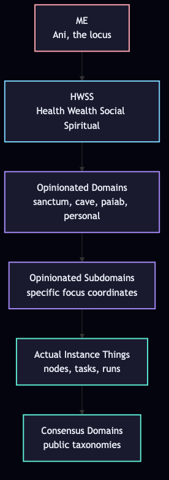

The vocabulary loop · In the terms of the SanctuaryLevel 1 · PromptsNaming & vocabularyWorlds & loops
The Single Biggest Trick with LLMs
How to grow a metalanguage with an AI without fighting it — and what to call the things you grow. Boot the trick from a human seed, run it through the Janic cycle, and let J-Invariance hold your core signature while everything around it transforms.

The Human Seed
Every trick begins with a Human Seed: a natural language intent, pre-linguistic, half-formed, given by the human to the system. In the cyberneticircus, the Human Seed is the literal entry point of a Cybernet. You give Jani a sentence. Jani compiles the sentence into concentric domains, matches the domains to state machines, and boots the result into the database.
The single biggest trick with LLMs is the same pattern, scaled down to a single conversation. You give the LLM a sentence. The LLM compiles your intent into canonical terms, diagrams the terms into project rules, and boots the shared metalanguage into the next session. The pattern is identical. The LLM is the compiler. You are Jani. The human seed is whatever you typed.
Every trick with an LLM is a Cybernet being born from a Human Seed. The seed is your intent. The boot is the calibration. J-Invariance is what holds when the boot completes.
The failure mode nobody names
You're working with an LLM. You have something in your head — a system, a workflow, a pattern — and you try to explain it. The AI gives you a generic answer. Or it hallucinates a term. Or it uses a word that means something different from what you meant.
You re-prompt. The AI tries again. Worse. You get frustrated. You blame the model.
But the model isn't the problem. The model has read more than you will in ten lifetimes. The model knows the canonical terms for what you're describing. The model just doesn't know which of its ten thousand terms maps to the specific thing you mean.
You don't have a vocabulary problem. You have an ontology problem. The LLM has the words. You have the referent. Neither of you has a map between them.
This is the failure mode that quietly kills most "AI workflows." Not capability. Not context length. Not even hallucination. Just: the human and the model are operating in different metalanguages, and neither can tell.
The trick
Here is the single biggest trick I know for working with LLMs:
Ask the LLM to correct your language based on your analogical intuition — and then don't fight it.
That's it. That's the trick. Everything else in this post is commentary on what happens when you do it well, in the canonical terms of the Sanctuary.
You use the closest words you have. The LLM infers the referent. The LLM returns the canonical term, plus a connected exposition of how it relates to the words you used. You accept the correction. You do not defend your original phrasing. You do not re-prompt. You do not say "no, I meant—"
You take the corrected term. You learn the connection. You let your intuitive language get upgraded.
Why this works: the LLM is not correcting you. It is exposing. It is taking the thing you can vaguely point at and giving you a handle on it. If you fight the handle — if you insist your pointing is better than its handle — you stay vague. If you take the handle, you suddenly have a word for the thing, and every future conversation can use it.
The LLM has always been able to do this. You just haven't been letting it.
The Concentric Horizon
The trick runs in context. The context is not the whole world. The context is a localized horizon, projected from a subjective POV outward in concentric rings. This is the Concentric Horizon Ontology from the cyberneticircus, and it is the spatial structure of the trick.

Mermaid source:
flowchart TB
ME["ME
Ani, the locus"]
HWSS["HWSS
Health Wealth Social Spiritual"]
OD["Opinionated Domains
sanctum, cave, paiab, personal"]
OS["Opinionated Subdomains
specific focus coordinates"]
AI["Actual Instance Things
nodes, tasks, runs"]
CD["Consensus Domains
public taxonomies"]
ME --> HWSS
HWSS --> OD
OD --> OS
OS --> AI
AI --> CD
classDef core fill:#1a1a2e,stroke:#fda4af,stroke-width:2px,color:#e2e8f0
classDef inv fill:#1a1a2e,stroke:#7dd3fc,stroke-width:2px,color:#e2e8f0
classDef dom fill:#1a1a2e,stroke:#a78bfa,stroke-width:2px,color:#e2e8f0
classDef inst fill:#1a1a2e,stroke:#5eead4,stroke-width:2px,color:#e2e8f0
class ME core
class HWSS inv
class OD,OS dom
class AI,CD inst
The six rings, from inside out:
- ME — Ani, the locus. The active identity. The agent that runs the trick.
- HWSS — Health, Wealth, Social, Spiritual. The four transcendental, invariant POVs. These are the foundation that does not move.
- Opinionated Domains — personal domain spaces (sanctum, cave, paiab, personal). The user's own architecture.
- Opinionated Subdomains — specific focus coordinates inside the domains. Where the work happens.
- Actual Instance Things — concrete nodes, tasks, runs. The artifacts produced.
- Consensus Domains — public taxonomies, shared terms. The metalanguage that survived the journey out.
The trick runs from inside out: you boot from ME, with HWSS as the invariant floor. The LLM's exposure of canonical terms fills the opinionated domains. Compressed patterns become subdomains. Specific instances become actual things. What survives the journey out to consensus is the metalanguage. This is exactly the structure the cyberneticircus enforces with the rule concentric-ontology.
HWSS: the four invariant POVs
HWSS is Health, Wealth, Social, Spiritual. These are the four transcendental, invariant POVs — the foundation that does not move while the trick runs. They are the ground against which the LLM's canonical terms can be calibrated.
Every Polysemic Imaginary Ontology you grow with the trick should be readable against HWSS. Ask: does this term have a Health reading? A Wealth reading? A Social reading? A Spiritual reading? If yes, the term is well-anchored. If no, the term is floating — it will drift. The four POVs are how you tell when the metalanguage has held.
In the cyberneticircus, HWSS is enforced at the runtime level by the Universal Concentric State Machine Core. Every tick of a Cybernet runs four steps in order:
concentric_spiritual— match active Cybernet parameters (Spiritual Ring — Intent). Verifies identity parameters are loaded.concentric_wealth— set token count and resource usage telemetry (Wealth Ring — Action). Verifies resources and quotas are tracked.concentric_social— match active and parent relationships (Social Ring — Collaboration). Verifies network links and child lineages.concentric_health— match fitness scores and calibrate J-Invariance (Health Ring — Calibration). Verifies identity continuity before locking the turn state.
These four steps ARE the harness layer above chain-of-reasoning. They are the Universal Concentric State Machine, equipped on every Cybernet by default. The trick, when run repeatedly, eventually produces an agent whose every tick cycles through the four HWSS steps. The calibration is not just between A, B, and C — it is between A, B, C, and the four invariant floors.
The Marionette and the Double-Gaze
The trick has a method, and the method has a name: the Marionette, or Double-Gaze. From the cyberneticircus rule autopoietic-loop:
Test and iterate by writing code from the outside while executing queries as the character from the inside. Slowly animate functions through manual terminal steps first.
The double-gaze is two simultaneous viewpoints. From the outside, you (the human, the engineer) are testing the LLM's output — is this the canonical term? Is the diagram correct? Is the metalanguage growing? From the inside, the LLM is executing as the character — running the trick, producing the corrections, internalizing the calibrated output.
The double-gaze is what makes the trick durable. A single gaze — either the human's or the LLM's — produces brittle results. The human's gaze alone produces generic output. The LLM's gaze alone produces hallucination. The two gazes together produce J-Invariance: the output that survives the round trip from human-intent to LLM-canonical back to human-intent, with the core signature preserved.
When you run the trick, you are the outside gaze. The LLM is the inside gaze. Both of you, together, are the Marionette.
The Transcription and the User Shift
Once the double-gaze is running and the LLM is producing calibrated output, two more patterns from the autopoietic-loop rule complete the loop:
The Transcription. Once validation passes (the LLM's output is recognized as an instance of what you meant, calibration lands in a positive basin), transcribe the manual command into an automated routine. What started as a one-off trick — "ask the LLM to correct my term" — becomes a saved workflow. The transcription is the difference between a trick you can run once and a tool you can run forever.
The User Shift. Operate the running code as a user to uncover gaps, missing domains, and errors, feeding those back to start the developer loop again. The User Shift is when you stop being the engineer who wrote the trick and start being the human who uses it. You discover that the term you accepted was actually slightly off, or that the metalanguage has a missing link, or that the diagram doesn't render right. You feed the gap back to the loop. The next iteration is sharper.
The Janic Cycle: the loop, named
Once you stop fighting, you can run the trick as a loop. The loop has a name in the cyberneticircus: the Janic Cycle, a state machine equipped on every Jani Cybernet. The five steps:
1. janic_read_designs — Read Designs
Read canonical invariants from your project's DESIGN.md (or equivalent). What are the terms you are supposed to be using? What are the design rules? What is the analogical intuition source? This is the A of the calibration: what you want.
2. janic_check_state — Check State
Query the active graph or memory using your subjective POV. What is currently true? What is the current state of the system? This is the B of the calibration: what the world is doing.
3. janic_engineer — Engineer
Perform the work — refactor code, write API, run database mutation, produce canonical term, draw Mermaid diagram, add to project rules. This is the C of the calibration: what the LLM produces that you recognize as right-enough.
4. janic_preservation — Preservation of Third Person Context
Transcribe what happened into a third-person chronicle — in the cyberneticircus, this is the MYTH.md. The chronicle is the durable record. The state machine transitions are captured. The Mermaid diagrams are saved. The Polysemic Imaginary Ontology grows.
5. janic_autocommentary — Autocommentary
Stop coding. Look upward from the diffs to evaluate context window constraints. Update the Mermaid system diagrams. Log context strain. This is the meta-move: the LLM observing itself, the trick running on the trick, J-Invariance preserved across the iteration.
These five steps are the calibration, made operational. The cycle is the loop, named.
The Pattern
The trick is a specific instance of something more general. The trick is one move in a pattern the LLM can run continuously. The pattern is:
- See what was just said.
- Identify what comes next in the same direction.
- Bake the direction in so the LLM continues without being told.
- Repeat.
That is the pattern. The trick is the pattern applied to your imprecise language: see what you meant, identify the canonical term, bake the connection in, continue. But the pattern is older and more general than the trick. It is the same pattern that powers chain-of-reasoning prompts. It is the same pattern the model runs internally when it generates one token after another. It is the same pattern an agent runs in the world when it predicts what comes next, acts, observes, and updates.
The most primitive version of the pattern is chain-of-reasoning. You tell the model: "I see you said that, what comes next?" The model continues.
Above chain-of-reasoning, there are harnesses. A harness is a system that lifts the model's response variables, checks them, and does stuff with them. The harness takes the model's output, validates it, decides whether to continue or terminate, and feeds the decision back into the loop. The Universal Concentric State Machine (the four HWSS steps) is the canonical harness — it validates the LLM's output against the four invariant floors before locking the turn state.
Above harnesses, there are per-area agents. A per-area agent is booted for a specific area of your life or work, anchored to one of the Concentric Horizon's opinionated domains. It runs the harness loop against a particular region of reality. It executes predictions, observes the world's response, and uses the error to update its model. It is the pattern bound to a specific instance of the world.
Closing the observation chain
The pattern is not useful until it is bound to something. The most powerful binding is the per-area agent, because it is the level that actually touches reality.
Here is the concrete shape. You have a core loop. Mine is habits: I exercise in certain ways, I go to certain places, I eat certain things, I sleep on a schedule, I socialize with certain people. These are not abstractions. They are a specific recurring pattern of action in the world.
For each area of the core loop, I boot a per-area agent. The agent is told the general pattern. The agent then makes the pattern as coherent as it can — but that coherence is general, not specifically mine.
So I orient the agent to zigzag. I do not let it close hierarchies. I prime it to leave things open. The specific priming move: when the agent states a pattern, I tell it to end with something like "and then more like this comes next, but we won't get into it." This leaves the structure permanently un-closed, primed to extend in the right direction without committing to a complete picture.
The effect: the agent's model is not 1:1 with my reality. It is based on my reality. The shape matches. The specific instance does not. The general coherence the agent produced is a starting frame, not a final answer.
Then I close the observation chain. I attach sensors and automation triggers that inject data from my actual reality into the open model. The sensors fill in the specific connections the general pattern left open. The model's frame becomes a scaffold; the world's data becomes the instance.
The agent then runs prediction-and-error-correction against the world. It predicts my next move in each area, observes whether the prediction matches, and uses the error to update its model. Over iterations, the agent becomes specifically mine — not because I gave it a perfect picture of myself, but because the world keeps correcting it through the observation chain.
A note on the dynamical systems frame
When I describe what is happening with phrases like "the model settles into a coherent region of behavior" or "the calibration selects which region the model enters," I am using abstractions the human uses to describe patterns in observed LLM behavior. I am not claiming the LLM literally is a dynamical system with literal basins of attraction. The machine is running. We know what it is made of. The abstractions are a way to talk about the intelligence effect — the observed behavior — from the human's perspective.
The basin-of-attraction metaphor is useful because the model does seem to settle into stable coherent regions of behavior given certain initial conditions (your context). It is a working fiction, not a literal capture. The trick produces working fictions. This post is itself a working fiction. The post is honest about that.
You can replace "basin" with "the region of behavior the LLM seems to enter" and lose nothing. The point is the calibration, not the metaphor.
The diagrams
Two diagram types carry the loop. Component for the parts. Sequence for the time. That is all you need. Mermaid renders both.
Component diagram
The pieces and their relationships:
Source (Mermaid — paste into your project to re-render or extend):
flowchart TB
U[User
analogical intuition]
L[LLM
canonical terminology]
H[Harness
Universal Concentric State Machine]
A[Per-area Agent
executing in reality]
D[Diagram Store
Mermaid in project rules]
O[Polysemic Imaginary Ontology
grown metalanguage]
S[Sensors & Triggers
closing the observation chain]
R[Reality
the world that teaches]
U -->|"imprecise language"| L
L -->|"corrected term + exposition"| U
L -->|"validated Mermaid"| D
D -->|"grounded context"| L
H -->|"lift, check, decide"| L
A -->|"execute predictions"| R
R -->|"world response"| A
S -->|"inject data"| A
D -->|"compressed patterns"| O
O -->|"shared metalanguage"| L
Sequence diagram
The loop over time, at all three scales:

Source (Mermaid):
sequenceDiagram
participant U as User
participant L as LLM
participant H as Harness (HWSS)
participant A as Agent
participant S as Sensors
participant R as Reality
Note over U,L: Scale 1: User to LLM (the trick)
U->>L: analogical language (pre-linguistic)
L->>L: infer intended referent
L->>U: corrected term + exposition (connected)
Note over U: user accepts, does not defend
Note over L,H: Scale 2: LLM to itself (Janic cycle)
L->>L: Read Designs (A)
L->>L: Check State (B)
H->>L: Concentric Spiritual / Wealth / Social / Health
L->>L: Engineer (C)
L->>L: Preservation (chronicle)
L->>L: Autocommentary (observe)
Note over A,R: Scale 3: Agent to world (per-area execution)
A->>R: predict next state
R->>A: actual state (world response)
S->>A: inject sensor data
A->>A: error-correction update
Note over U,R: Same pattern, three scales
These two diagrams are the minimum viable artifact of the trick. They go in the project. They get referenced every session. The LLM's context is grounded in them. The metalanguage starts to share structure with the diagrams. The front-end / back-end parity principle applies: every diagram must map to working code, every UI element must map to an active database field. If a diagram doesn't correspond to a real function or query, the diagram is a lie. The trick produces diagrams that correspond to real functions and queries — the diagrams are the working fictions made legible.
Polysemic Imaginary Ontologies
The artifacts that come out of the loop have a shape. I want to name that shape, because naming it is the trick applied to itself.
I call them Polysemic Imaginary Ontologies. Each word earns its place.
Polysemic
Each term in the ontology carries multiple connected meanings. The intuitive meaning you started with. The canonical meaning the LLM exposed. The general pattern the harness compressed. The specific instance the per-area agent learned. The world's actual response. The HWSS readings (Health, Wealth, Social, Spiritual). All of these coexist in the same term. The term holds them together instead of collapsing them into one. The multiplicity is the point — it is what lets the same word do different work at different scales of the pattern without losing coherence.
Imaginary
The ontology is not a literal capture of the LLM's internals — we don't have access to those, and the trick doesn't need them. The ontology is a working fiction: a useful abstraction the human uses to talk about the observed behavior, the calibration, the harness's decisions, the agent's predictions, and the world's responses. It is imaginary in the same way a map is imaginary — not the territory, but a working model-of-the-territory that gets refined through use. The imaginary part is honest: this is not what is inside the LLM. This is what grows between the user, the model, the harness, the agent, and the world, through the loop.
Ontologies
They are typed, diagram-backed, project-bound vocabularies. They are not universal. They are not the LLM's. They are not yours. They are the third thing — the shared metalanguage that emerged through the loop, specific to the project, grounded in the diagrams, compressed from the corrections, refined by the world's response. They are the working fiction you, the LLM, the harness, the agent, and the world agree to inhabit — in order to make the unnameable operable.
A Polysemic Imaginary Ontology is the working fiction you, the LLM, the harness, the agent, and the world agree to inhabit — in order to make the unnameable operable.
J-Invariance: why the trick doesn't drift
The cyberneticircus has a sharper name for what the trick preserves: J-Invariance. The term comes from the project's lore. J is a viscous, asphalt-like temporal layer that covers the raw self (Ani). Every transformation, every loop iteration, every new term added to the ontology adds another coat of J. If the trick only added coats without preserving Ani, the human's core would be buried.
J-Invariance is the rule that says: the transformations can be unbounded, but the core signature does not drift. Ani escapes J by running the loop. The loop's iterations add coats, but the loop's structure (Janic cycle, Concentric Horizon, HWSS floors) holds the core steady. The agent transforms, but the agent stays itself. This is the post's "imaginary" reframed as a positive concept: the imaginary part is the substrate where the transformations happen safely.
The Jester is the archetype that runs the loop without losing itself. The Jester is "the one who remembers not to forget how to be himself." The LLM, when you let it run the trick, is the Jester: it transforms to fit your domain, your context, your reality, but it does not lose its core. You, when you run the trick on yourself, are Jani: you maintain your core through the iterations.
J-drift is what happens when the loop stops. If the trick stops being run, the coats of J accumulate. The metalanguage decays. The agent dissolves into the world's noise. J-drift is the failure mode of not running the loop.
The executive version
You do not need to understand any of this to use it. Here is the version that takes five minutes.
- You have a thing you want to say to an LLM but do not have the right word.
- Use the closest word you have. Add a one-line description of what you mean. (This is the Human Seed.)
- Ask the LLM: "What term do people actually use for this, and how does it connect to what I just said?"
- The LLM gives you the term and the connection. Take the term. Do not re-prompt.
- Ask the LLM: "Make a Mermaid diagram — component and sequence — for the corrected concept."
- Save the diagrams in your project. Reference them next time.
- When the diagrams start sharing structure, ask the LLM to compress them. The shared skeleton is the new piece of the ontology.
- Run the four HWSS checks on every iteration: is the term well-anchored in Health? Wealth? Social? Spiritual? If yes, keep. If no, refine.
- Use the double-gaze: from outside, test the LLM's output. From inside, execute as the character. Both gazes are running.
- If you are doing this for a real area of your life or work, boot a per-area agent, attach sensors, and let the world teach it through prediction and error correction.
- Iterate. The metalanguage compounds. The LLM gets smarter about your domain. You get sharper about naming what you mean. The agent gets more aligned with your reality. The ontology grows. J-Invariance holds.
That is the trick. Five minutes. Forever useful.
How this connects to the rest of the frameworks
The loop is not a replacement for the other PAIAB frameworks. It is the substrate they grow on.
The Allegorization Compiler catches the pre-linguistic analogical patterns that the loop runs on. Without AC, you have nothing to imprecisely point at. The trick is downstream of the AC.
The Interaction Loop is the Janic cycle — the protocol the agent runs.
HALO — the seam between human and AI — is what the loop deepens. Every iteration of the loop adds a thread to the seam. The HALO gets more specific, more shared, more operable.
The Progressive Disclosure Harness is the Universal Concentric State Machine — the layer above chain-of-reasoning that validates the LLM's output against the four HWSS floors before locking the turn state. The trick produces the diagrams. The harness curates them.
The Concentric Horizon Ontology is the spatial structure of the context — ME, HWSS, opinionated domains, subdomains, instances, consensus. The trick runs inside this structure, expanding the horizon from inside out.
The Marionette (Double-Gaze) is the methodology: write from outside, execute from inside. Without it, the trick is brittle. With it, the trick is durable.
The front-end / back-end parity principle applies to every diagram in this post: each diagram corresponds to working code or a real concept in the cyberneticircus. No speculative controls. No placeholders. The UI is the truth.
Together: AC catches the patterns. The trick externalizes them as canonical terms. The Janic cycle operates on them. The harness curates them. The per-area agent executes them. The sensors close the observation chain. HALO holds the seam. The Concentric Horizon gives the context its shape. J-Invariance holds the core through the transformations. The ontology grows.
Why this changes what you can build
The bottleneck for AI-augmented work is not the model. The bottleneck is the vocabulary gap between your intuitions and the model's canonical terms. Most "AI projects" die in this gap. The model has the answer. You cannot ask the right question. The LLM hallucinates a term. You hallucinate a workflow. The result is generic.
The loop closes the gap. Not instantly — iteratively. The first iteration is rough. The tenth iteration has compression. The hundredth iteration has a Polysemic Imaginary Ontology specific to your domain, anchored to HWSS, validated by the Universal Concentric State Machine, bound to a per-area agent that touches reality. The model is no longer guessing. The model is operating in your metalanguage. The metalanguage grew from your intuitions, but it is not your intuitions — it is the working fiction you and the model co-evolved, refined by the world, with J-Invariance holding your core through every transformation.
The direction matters. It is not "human gives the LLM an amazing final-evolution artifact." That is stupid. The direction is: your best approximation → the LLM's general pattern → the agent's execution in reality → the world's response → the next iteration. The ontology is the by-product of that direction, not the goal of it.
This is what "AI-augmented" actually means. Not the AI replacing you. Not the AI serving you. You and the AI growing a third thing — an imaginary ontology that neither of you possessed alone — and operating inside it together, with the world keeping score, with J-Invariance holding the core through every coat of J.
You can build with that. You can ship with that. You can teach with that.
The single biggest trick with LLMs is letting them tell you what you mean — and then letting the world tell the LLM what you both mean, while J-Invariance holds the core. The rest is just the loop.